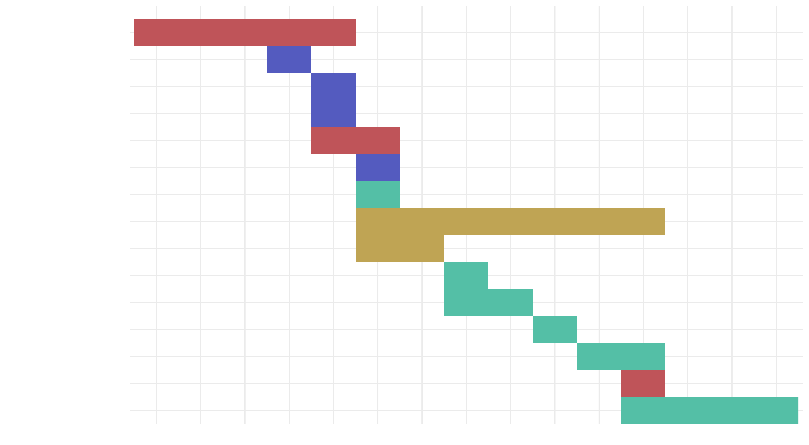
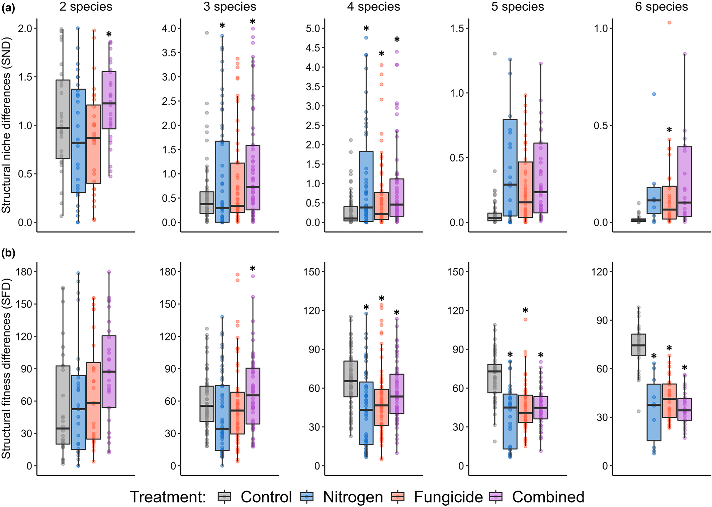

Theory < data for community ecology
üå±
Basque Centre for Climate Change (BC3)
2025-03-05
Who am I?
Life (1/2)
born and raised in Vigo, Galicia
used to hide roly polies in pockets to take them home from kindergarten
started hiding them in socks after teacher found out
not super interested in the natural world growing up
parents wanted me to be a medical doctor because of Franco1
failed 8/9 last year of high school, had to retake it
Life (2/2)
invoked the spirits of the roly polies and went to uni to become a biologist
adopted Meiga1
went on and became a real doctor
met this woman who had a tank of pet roly polies, kidnapped her & married her
Career
What am I doing here?
An overview of my science
How is biodiversity maintained?
How is biodiversity maintained?
Imagine we have two species, üåº & ü™ª:
If the niches of üåº & ü™ª are totally different, they mind their own business ‚òÆÔ∏è
If their niches completely overlap, there‚Äôs drama; competitive exclusiona: the most competitive (üåº = üèÖ) outcompetes the least competitive (ü™ª = üíÄ)
How is biodiversity maintained?
Imagine we have two species, üåº & ü™ª:
If the niches of üåº & ü™ª are totally different, they mind their own business ‚òÆÔ∏è
If their niches completely overlap, there‚Äôs drama; competitive exclusiona: the most competitive (üåº = üèÖ) outcompetes the least competitive (ü™ª = üíÄ)
Anything in between: modern coexistence theoryb,c
Pairwise understanding of biodiversity maintenance (examples)
climate variability has a stabilising effect in the communityd, but climatic extremes lead to lower probability of coexistencee
the inferior competitor arriving first can generate close-to-neutrality situations (low niche and fitness differences)f
correlations between functional traits and fitness differences are clear but not so much with niche differencesg
phylogeny does not predict coexistence mechanisms, against expectationsh,i
etc.
Multispecies coexistence: structural stabilityj
Multispecies coexistence: structural stability (my workk)
- Nitrogen enrichment & pathogen suppression:
Multitrophic interactions in a plant-grasshopper interaction network (under review)
Land use intensity (submitted)
Multispecies coexistence: assembly graphsm
RECODYN (Q: 1/n)
How does climate change affect the coexistence mechanisms of recovering communities?
RECODYN (Q: 2/n)
What are the recovery pathways of ecological communities under climate change?

How can I be useful to you?
(Thought for the new techs, but applies to all)
Come to me if you want (1/2)
- to learn (or improve your) R skills
- can help you better than chatGPT1
- an opinion on dataviz (or anything else)
- can‚Äôt see red on black very well, so please, don‚Äôt highlight text in red2 üôè
- to discuss an idea you’ve had, ecologically relevant or not
- love talking science
- to write a piece for The Conversation
- would be happy to help shape the focus and co-author it with you
Come to me if you want (2/2)
- some mentoring about how to navigate the academic system
- have experience in multiple situations so I might be helpful
- to speak in Spanish, Galician, or Portuguese
- for other languages beyond English, I’ll delegate to my teammates
- to play pádel
- a bunch of people from BC3 go ~once a week
- a favour or just a chat
- this job is very demanding of our time and energy so let’s prevent burnout
Thank you üò∏
BlueSky: @granjel.bsky.social ü¶ã
Phone number: +34 667 04 86 44 üì±